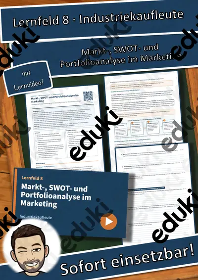
LF 8 Industriekaufleute: Markt-, SWOT- und Portfolioanalyse im Marketing – Übungen, Lösungen + Lernvideo

LF 9 Anlagenmechaniker/-in SHK: Durchlauf- und Speicherprinzip im Vergleich – Übungen, Lösungen + Lernvideo

LF 10 Zahnmedizinische Fachangestellte: Fluoridierung und Fissurenversiegelung – Übungen, Lösungen + Lernvideo
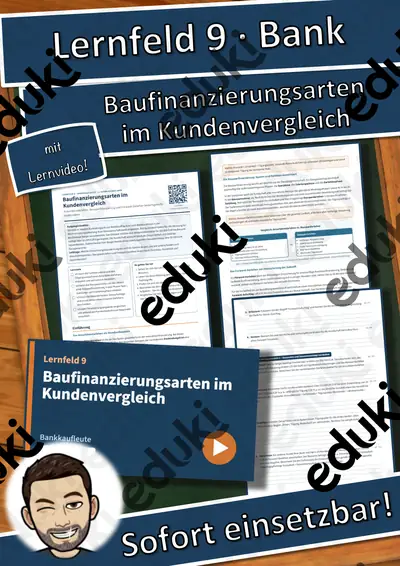
Lernfeld 9 Bankkaufleute: Baufinanzierungsarten im Kundenvergleich – Einführung, Übungen, Lösungen + Lernvideo
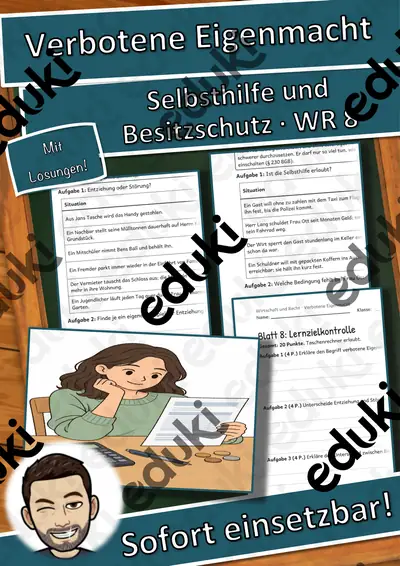
Verbotene Eigenmacht – Arbeitsheft mit Lösungen (WR 8, Realschule Bayern)
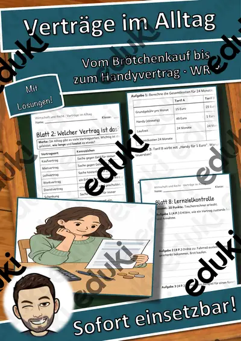
Verträge im Alltag – Arbeitsheft mit Lösungen (WR 8, Realschule Bayern)
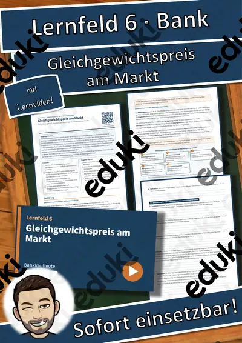
Lernfeld 6 Bankkaufleute: Gleichgewichtspreis am Markt – Einführung, Übungen, Lösungen + Lernvideo
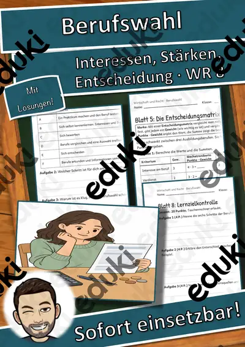
Berufswahl_Entscheidungsprozess_WR8
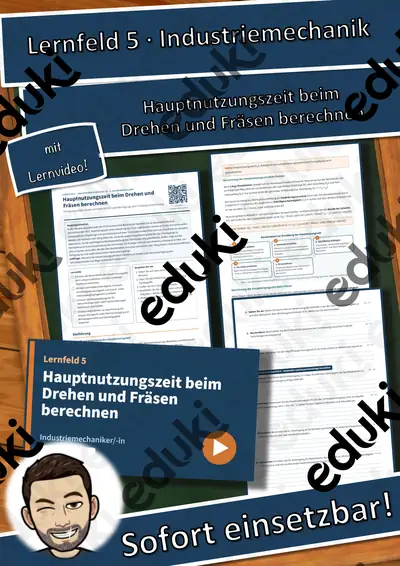
LF 5 Industriemechaniker/-in: Hauptnutzungszeit beim Drehen und Fräsen berechnen – Übungen, Lösungen + Lernvideo

Zeitungsbericht Lückentext mit Wortspeicher Hörverstehen und Suchsel

Wasserfarbe Lückentext mit Wortspeicher Hörverstehen und Suchsel

Verkaufspsychologie Lückentext mit Wortspeicher Hörverstehen und Suchsel
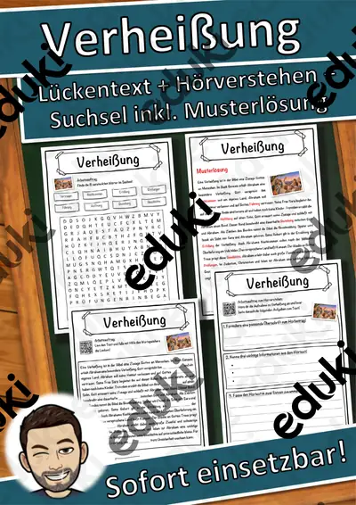
Verheißung Lückentext mit Wortspeicher Hörverstehen und Suchsel
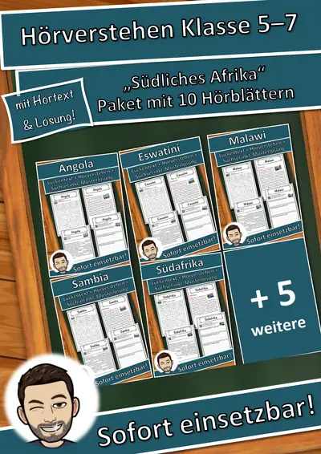
Materialpaket Hörverstehen Afrika: Länder und Regionen – Südliches Afrika Klasse 5–7: 10 Hörblätter mit Lösung
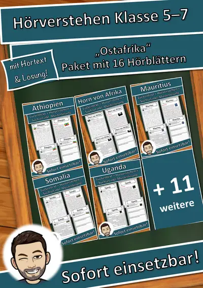
Materialpaket Hörverstehen Afrika: Länder und Regionen – Ostafrika Klasse 5–7: 16 Hörblätter mit Lösung
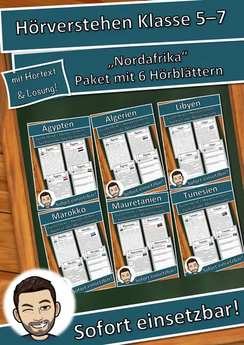
Materialpaket Hörverstehen Afrika: Länder und Regionen – Nordafrika Klasse 5–7: 6 Hörblätter mit Lösung
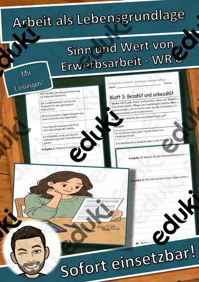
Arbeit als Lebensgrundlage – Arbeitsheft mit Lösungen (WR 8, Realschule Bayern)
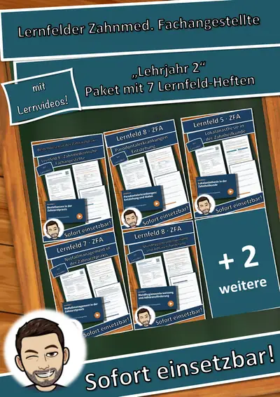
Materialpaket Lernfelder Zahnmedizinische Fachangestellte Berufsschule Lehrjahr 2: 7 Lernfeld-Hefte mit Übungen, Lösungen und Lernvideo
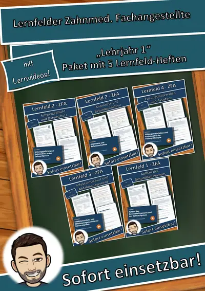
Materialpaket Lernfelder Zahnmedizinische Fachangestellte Berufsschule Lehrjahr 1: 5 Lernfeld-Hefte mit Übungen, Lösungen und Lernvideo
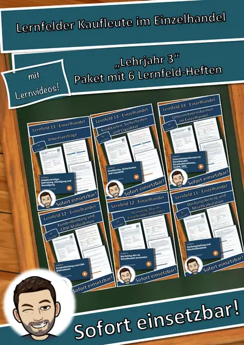
Materialpaket Lernfelder Kaufleute im Einzelhandel Berufsschule Lehrjahr 3: 6 Lernfeld-Hefte mit Übungen, Lösungen und Lernvideo
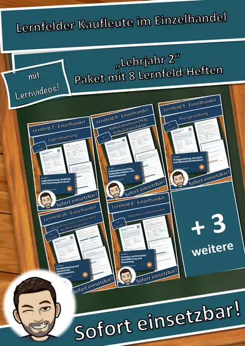
Materialpaket Lernfelder Kaufleute im Einzelhandel Berufsschule Lehrjahr 2: 8 Lernfeld-Hefte mit Übungen, Lösungen und Lernvideo
Materialpaket Lernfelder Kaufleute im Einzelhandel Berufsschule Lehrjahr 1: 8 Lernfeld-Hefte mit Übungen, Lösungen und Lernvideo

Materialpaket WR Klasse 8/9 Realschule Bayern – Markt und Marketing: 3 Arbeitshefte mit Lösungen
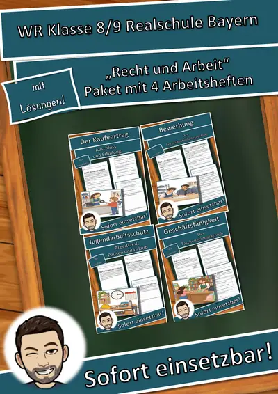
Materialpaket WR Klasse 8/9 Realschule Bayern – Recht und Arbeit: 4 Arbeitshefte mit Lösungen
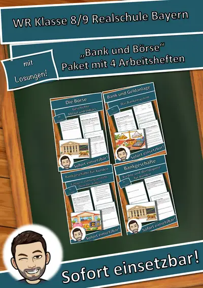
Materialpaket WR Klasse 8/9 Realschule Bayern – Bank und Börse: 4 Arbeitshefte mit Lösungen
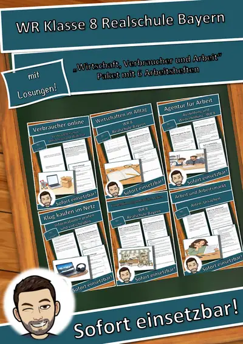
Materialpaket WR Klasse 8 Realschule Bayern – Wirtschaft, Verbraucher und Arbeit: 6 Arbeitshefte mit Lösungen

Materialpaket WR Klasse 8 Realschule Bayern – Recht: 5 Arbeitshefte mit Lösungen
Materialpaket BwR Klasse 10 Realschule Bayern: 8 Arbeitshefte mit Lösungen

Materialpaket BwR Klasse 9 Realschule Bayern: 10 Arbeitshefte mit Lösungen
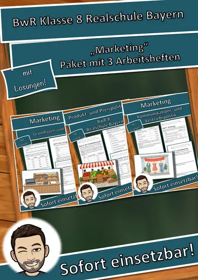
Materialpaket BwR Klasse 8 Realschule Bayern – Marketing: 3 Arbeitshefte mit Lösungen
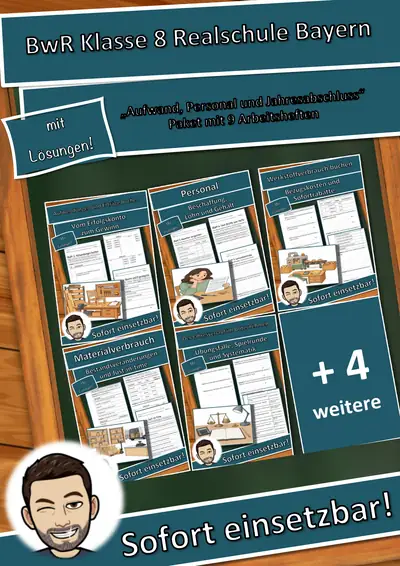
Materialpaket BwR Klasse 8 Realschule Bayern – Aufwand, Personal und Jahresabschluss: 9 Arbeitshefte mit Lösungen
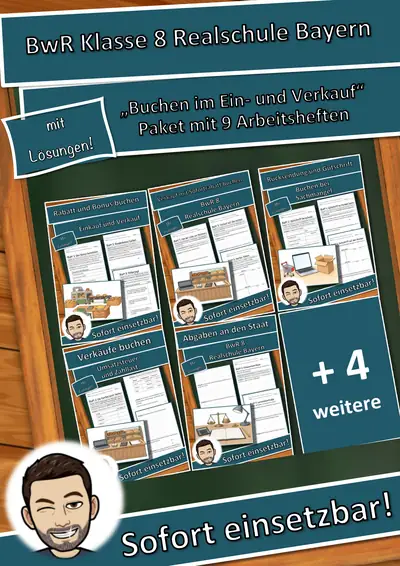
Materialpaket BwR Klasse 8 Realschule Bayern – Buchen im Ein- und Verkauf: 9 Arbeitshefte mit Lösungen
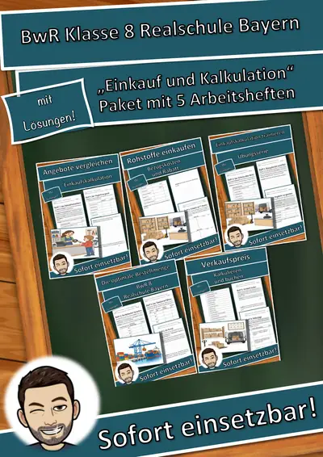
Materialpaket BwR Klasse 8 Realschule Bayern – Einkauf und Kalkulation: 5 Arbeitshefte mit Lösungen
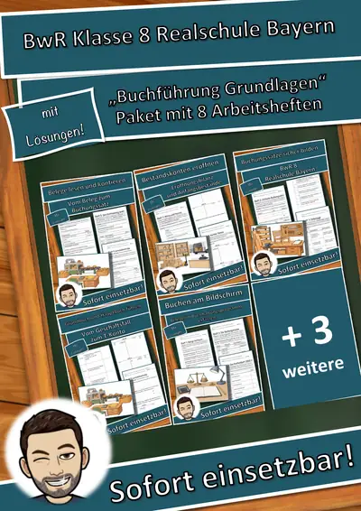
Materialpaket BwR Klasse 8 Realschule Bayern – Buchführung Grundlagen: 8 Arbeitshefte mit Lösungen

Materialpaket BwR Klasse 7 Realschule Bayern – Wirtschaft und Unternehmen: 6 Arbeitshefte mit Lösungen

Materialpaket BwR Klasse 7 Realschule Bayern – Rechnungswesen: 5 Arbeitshefte mit Lösungen

Materialpaket Prüfungstraining Mathematik Klasse 9: 10 Übungshefte mit Prüfungsteil und Lösungen
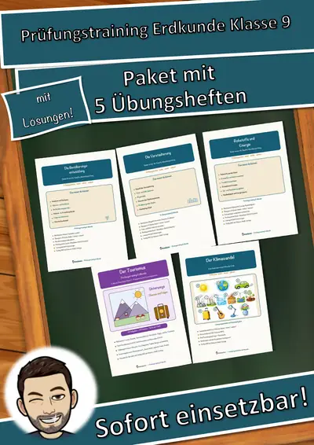
Materialpaket Prüfungstraining Erdkunde Klasse 9: 5 Übungshefte mit Prüfungsteil und Lösungen

Materialpaket Prüfungstraining Erdkunde Klasse 8: 6 Übungshefte mit Prüfungsteil und Lösungen

Materialpaket Prüfungstraining Chemie Klasse 9: 5 Übungshefte mit Prüfungsteil und Lösungen

Materialpaket Prüfungstraining Biologie Klasse 8 – Zelle und Ökologie: 4 Übungshefte mit Prüfungsteil und Lösungen
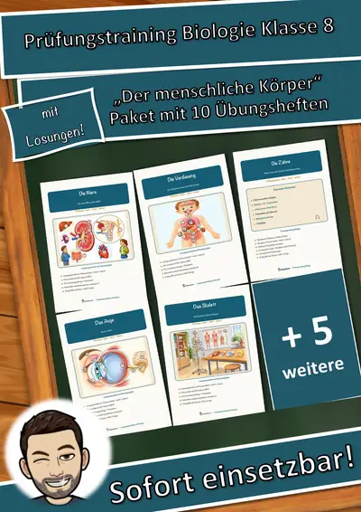
Materialpaket Prüfungstraining Biologie Klasse 8 – Der menschliche Körper: 10 Übungshefte mit Prüfungsteil und Lösungen

Materialpaket Prüfungstraining Physik Klasse 9: 4 Übungshefte mit Prüfungsteil und Lösungen

Materialpaket Prüfungstraining Geschichte Klasse 8: 5 Übungshefte mit Prüfungsteil und Lösungen

Materialpaket Prüfungstraining Geschichte Klasse 9: 3 Übungshefte mit Prüfungsteil und Lösungen

Materialpaket Prüfungstraining Wirtschaft Klasse 9: 8 Übungshefte mit Prüfungsteil und Lösungen

Materialpaket Prüfungstraining Mathematik Klasse 8: 8 Übungshefte mit Prüfungsteil und Lösungen

Materialpaket Prüfungstraining Deutsch Klasse 9: 4 Übungshefte mit Prüfungsteil und Lösungen
Keine Materialien gefunden – versuch einen anderen Suchbegriff oder Filter.